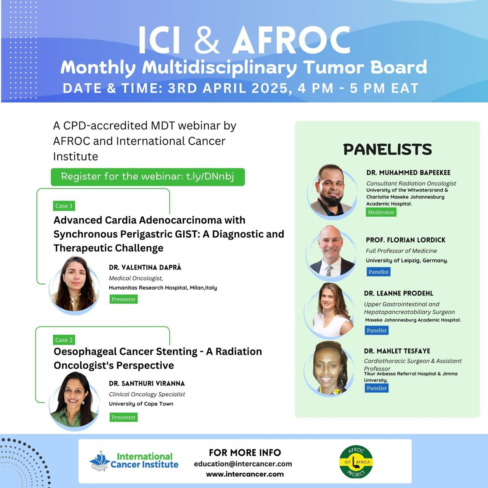

MDT Programme
How AFROC's multidisciplinary tumour board work supports shared professional learning.
AFROC's MDT programme brings specialists together to discuss learning themes, improve coordination, and strengthen professional practice through structured, de-identified educational exchange across Africa and Europe.
Session archive
Browse dated entries, case themes, named speakers, attendance where available, and direct recording references from AFROC MDT activity.
Coverage
Sessions span oncology, surgery, pathology, and endoscopy with recurring contributors across African and European institutions.
Case Presentation Library
Download AFROC-linked case presentation material
These PDF presentations extend the MDT archive with case-based teaching material across surgery, oncology, pathology, and multidisciplinary management.
Oncology
Systemic therapy, chemo-radiotherapy, and metastatic disease
To CROSS or NotNeoadjuvant CCRT for oesophageal cancer
Oligometastatic gastric adenocarcinomaCase-based management discussion
Tumour length as a practical markerChemo-radiotherapy learning case
Metastatic oesophageal adenocarcinomaSystemic management teaching file
Oligometastatic esophageal cancerMultidisciplinary discussion case
GOJ cancers systemic therapyA tale of two diseases
Surgery
Operative complications, surgical timing, and perioperative care
Post-esophagectomy anastomotic leakInsights from two case studies
Bronchopleural fistula post esophagectomyAn unusual complication
Delayed surgery for SCC oesophagusSurgical timing case
Prehabilitation clinical caseEsophageal adenocarcinoma
Esophageal GISTCase presentation PDF
Young-onset gastric cancerEducational case presentation
Upcoming 2026 MDTs
The next virtual tumour board cycle is already mapped out
These entries reflect the current 2026 AFROC virtual tumour board calendar and show upcoming programme activity. Confirmed dates are presented now, while session-specific faculty details can be published as each event line-up is finalized.
Thursday, 05 March 2026
Tumour length as a practical marker in oesophageal cancer treated with concurrent chemo-radiotherapy
Radiation oncology
Internal medicine
Recording tracked
Thursday, 09 April 2026
Management of oligometastatic gastric adenocarcinoma
Thursday, 07 May 2026
Pathology-focused MDT session
Thursday, 04 June 2026
Surgical track MDT session
Thursday, 03 September 2026
September 2026 MDT session
Thursday, 01 October 2026
October 2026 MDT session
Thursday, 05 November 2026
November 2026 MDT session
Thursday, 03 December 2026
December 2026 MDT session
Session Library
Browse real AFROC MDT sessions and references
Explore sessions by topic, specialty, and period.
September 5, 2024
Session 1: Neoadjuvant CCRT and locally advanced squamous disease
- Case 1: To CROSS or Not: A Case of Neoadjuvant CCRT for Oesophageal Cancer
- Case 2: Treatment of Locally Advanced/Oligometastatic Squamous Cell Carcinoma of the Esophagus
October 3, 2024
Session 2: Delayed surgery and first-line metastatic gastric treatment
- Case 1: Delayed Surgery After Neoadjuvant Chemoradiation
- Case 2: First-line treatment of HER2 Negative, PD-L Positive Gastric Adenocarcinoma Stage IV
November 7, 2024
Session 3: Perforation, peritonitis, and young-onset gastric cancer
- Case 1: Proximal Gastric Tumor Perforation Presenting with Generalized Peritonitis while on Neoadjuvant Chemotherapy
- Case 2: A clinical case of a young-onset gastric cancer
January 9, 2025
Session 4: Perioperative chemoimmunotherapy and post-esophagectomy complications
- Case 1: The importance of perioperative chemoimmunotherapy in potentially resectable MSI-H gastric adenocarcinoma
- Case 2: Bronchopleural fistula after esophagectomy: An unusual complication
March 6, 2025
Session 5: GEJ tumours and prehabilitation during neoadjuvant therapy
- Case 1: Gastro oesophageal junction tumours - tale of two diseases
- Case 2: Prehabilitation during neoadjuvant therapy for esophageal cancer
April 3, 2025
Session 6: Stenting case reports and multidisciplinary decision-making
- Theme: Case reports on stenting
- Case 1: Advanced Cardia Adenocarcinoma with Synchronous Perigastric GIST: A Diagnostic and Therapeutic Challenge
- Case 2: Oesophageal cancer stenting - a radiation oncologist's perspective
May 8, 2025
Session 7: Systemic therapy, brain metastases, and staging dilemmas
- Theme: Holding Therapy/Systemic Therapy
- Case 1: Management of brain metastases in a patient with HER2-positive gastric cancer
- Case 2: Lower thoracic esophageal cancer: Squamous cell cancer, incompletely staged
June 5, 2025 to October 2, 2025
Specialty-track MDT sessions
- June 5, 2025: Surgical Case
- August 7, 2025: Pathology Case
- September 4, 2025: Oncology Case
- October 2, 2025: Endoscopy and Stenting in Multidisciplinary Oncology Care
Training Structure
The MDT programme sits inside a wider six-work-package model
Expert network formation
Includes public awareness planning, sustainability work, ESMO preceptorship activity, and AFROC guideline initiatives.
Monthly VTBs
Monthly virtual tumour boards bring together two cases, African and European expertise, and multidisciplinary review.
Case-centred discussion
Real sessions focus on practical management, workup challenges, and context-specific decision-making.
AFROC and ICI collaboration
The posters and VTB materials show how AFROC and the International Cancer Institute are working together on this track.
Participation expectations
- Use clear professional language and explain abbreviations when needed.
- Ensure any case-based learning material is de-identified before circulation.
- Keep shared resources versioned, dated, and assigned to a clear content owner.
Continue exploring
Continue to events and the resource library for upcoming sessions and related learning material.